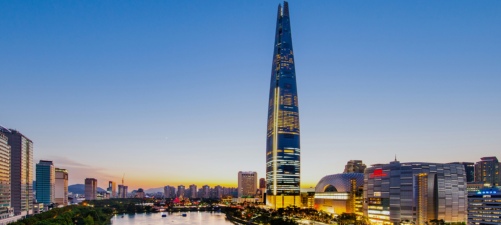
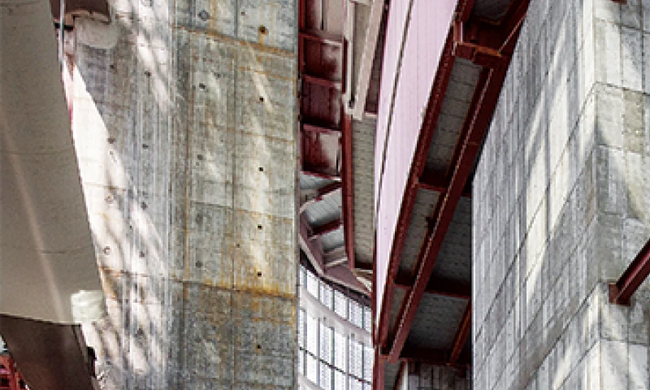
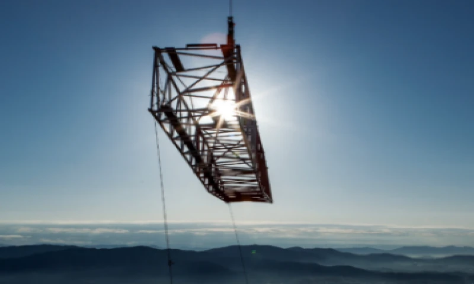
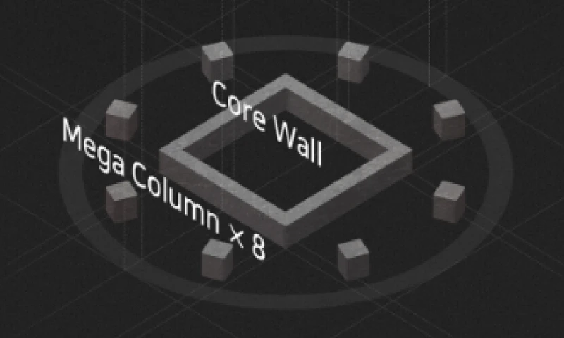
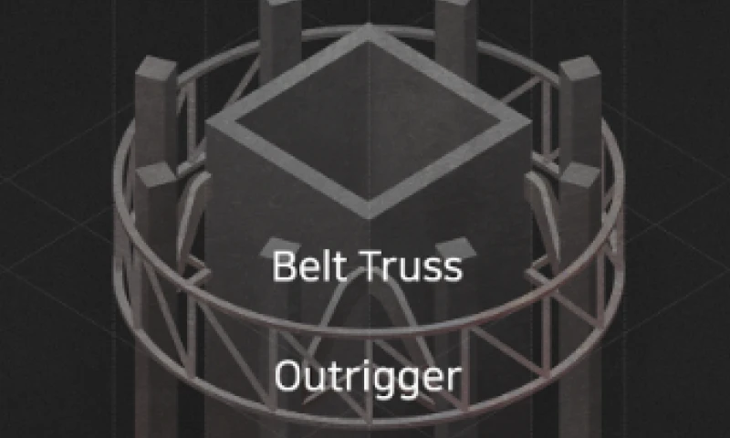
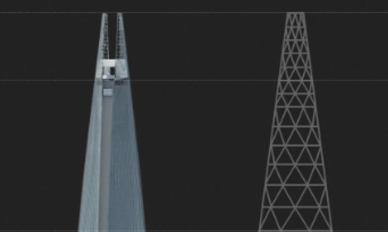

롯데월드타워
롯데월드타워는 글로벌 상징성과 한국의 전통미, 첨단기술과 자연이 공존하는 미래형 수직도시입니다.
HIGHLIGHT
- 6th 세계 6위, OECD 1위 높이의 건축물로 대한민국의 위상을 세계에 상징적으로 대표하고 있습니다.
- 129 층 지상 123층, 지하 6층으로 총 129개층에서 복합쇼핑몰, 호텔, 전망대 등 즐길 수 있는 모든 문화 경험을 제공합니다.
- 5500만명 다양한 팝업스토어, 트렌디한 이벤트로 가득찬 대한민국의 중심 관광지로 2023년 한 해 동안 5,500만명이 방문하였습니다.
TECHNOLOGY
- 검증된 안전 랜드마크
- 기본계획, 실시설계, 건물운영까지 모든 과정에 안전을 최우선으로 고려하였습니다.
- 4,200만 톤의 철근과 8만 톤의 고강도 콘크리트가 투입된 기초 공사, 진도 9 이상의 지진에도 견디는 내진설계,
365일 24시간 600여 개의 센서로 계측하는 최첨단 안전 시스템으로 누구나 인정하는 안전 랜드마크가 되었습니다.
-

- 견고한 기초 매트
- 가로 72m, 세로 72m,높이 6.5m의 견고한 기초 매트로 타설하였습니다.
-

- 내풍·내진 설계
- 진도 9의 강진과 초속 80m의 태풍을 이겨내는 내풍 내진 구조로 설계했습니다.
-

- 코어월 & 메가컬럼
- 타워의 중심 뼈대인 코어월과 8개의 메가컬럼이 수직 중력을 지탱합니다.
-

- 아웃리거 & 벨트 트러스
- 바람과 지진의 횡압력을 이겨내는 아웃리거와 벨트 트러스를 약 40층마다 세 군데 설치하였습니다.
-

- 다이아그리드 공법
- 최상부를 다이아그리드 구조로 설계하여, 태풍과 지진 등의 횡압력에 강합니다.